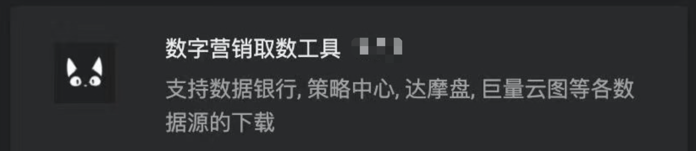

阿甫工具 说明手册
"提供各营销后台各数据源的导出功能"
概览§
产品理念：让天下没有难取的数。拒绝接受人为制造的阻碍。

简介§
阿甫工具 是基于JavaScript开发的浏览器插件。
受困于各平台数字营销后台的无处取数，以及品牌变幻莫测、奇思妙想的花式取数需求。刚需存在，平台不给。于是一怒之下自行开发了相关数字营销后台的取数插件。
由于是第一次做插件，交互很简单，UI界面也尽可能控制在无感知状态。同时为了始终维持极简交互，数月的开发过程做了诸多复杂的尝试与考虑。
零成本安装，零成本上手，零成本使用。
一看就懂，一用就会，一点击即惊呼yyds。
希望能切实帮助消费者营销的童鞋们节省取数时间，提高取数效率，将更多的精力放在分析与思考上。
阿甫工具 目前涵盖终端：
- Chrome浏览器扩展：